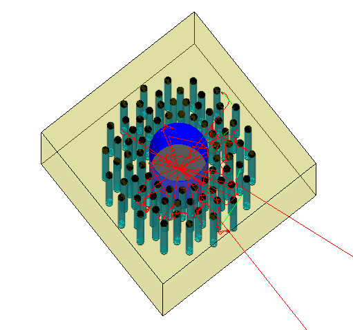
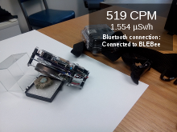

projects
Most project files are published on GitHub.
Neutron Multiplicity Simulation with Geant4
 Based on the Monte Carlo particle transport framework Geant4, an application to simulate multiplicity measurements of plutonium samples will be developed. It should act as an Open Source alternative to established codes. The project includes two special libraries: NMSMaterialDecay for spontaneous fission source definitions and NMSPulsetrainManager to derive the plutonium mass from the pulsetrain of neutron detection events.
Applications for Google Glass / Safecast

In collaboration with Princeton University's Nuclear Futures Laboratory, two apps for Google Glass have been developed.
DoseView allows the Glass to display data collected by the Safecast project. With the GeigieGlass app, Google Glass can be used to display data measured by a bGeigie nano, transmitted via Bluetooth. Currently, functionality is limited to displaying a CPM rate every 5 seconds.
Content Analysis: Nuclear Statements
Using the content management system Drupal, modules to do Optical Character Recognition (OCR) and quantitative content analysis were created. They are in use on http://www.nuclear-statements.org. The website can be used to analyze text documents (mainly statements given by countries) in two international negotiation arenas, the United Nations General Assembly First Committee and the NPT Review Cycle.